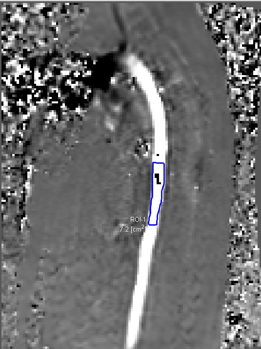

Computational cardiovascular mechanics
High-resolution flow reconstruction from sparse cardiovascular imaging
Physics-informed neural networks constrained by the Navier–Stokes equations are used to reconstruct velocity and pressure fields from sparse 4D Flow MRI measurements. The objective is to enhance hemodynamic information for patient-specific analysis of Fontan circulation.